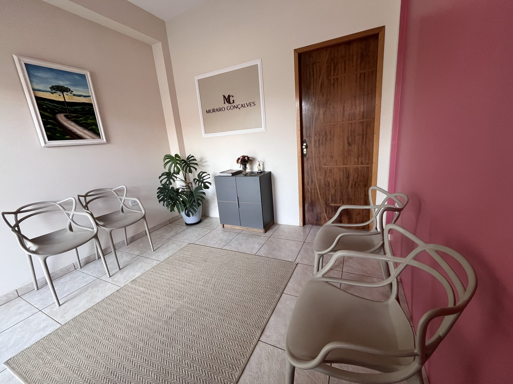

Advocacia Previdenciária em Siqueira Campos e Quatiguá/PR — Muraro Gonçalves
Muraro Gonçalves Advocacia:
A Muraro Gonçalves Advocacia é um escritório de advocacia com atuação voltada para o Direito Previdenciário, com matriz em Siqueira Campos/PR e filial em Quatiguá, além de atendimento remoto para todo o Brasil.
Nosso escritório foi idealizado e realizado pela Dra. Isabelle Muraro Gonçalves a partir do comprometimento com a representação de clientes no âmbito administrativo e judicial, no pleito de benefícios previdenciários, seja no Regime Geral (INSS) ou nos Regimes Próprios de Previdência, bem como na consultoria e planejamento de benefícios.
Reconhecemos que a previdência foi desenvolvida para atender os cidadãos em seus momentos de maior vulnerabilidade social, como o avanço da idade, a incapacidade para o trabalho, a perda de alguém, a maternidade, etc. No entanto, alcançar o direito a tal proteção exige técnica e responsabilidade. É para isso que você pode contar conosco!
Por que nos escolher?
NOSSOS DIFERENCIAIS
Especialização na área
Aliamos especialização certificada com experiência.
Estudo e atualização constantes
As modificações nas regras previdenciárias são diárias, por isso mantemos estudo e atualização constantes.
Trabalho com transparência
O cliente tem liberdade e acesso aos trâmites do seu caso.
Planejamento
Analisamos as possibilidades presentes e futuras da sua vida previdenciária.
Eficiência
Nosso trabalho é feito em um tempo justo e adequado à demanda.
Atendimento personalizado e humanizado
Cada cliente é especial para nós e estamos atentos a cada detalhe.
Ter uma profissional que atua com responsabilidade na sua demanda te dará a segurança e a tranquilidade de saber que seu problema está em boas mãos.
Nossos Serviços
Áreas de atuação em Direito Previdenciário
PLANEJAMENTO PREVIDENCIÁRIO
regularização das contribuições, análise do melhor benefício e investimento.

Proteja seu futuro!
Não perca tempo com a burocracia do INSS. Agende sua consulta e garanta o melhor benefício para você e sua família.
Agende sua ConsultaGaleria
Eventos, Palestras, Aulas e Congressos
- Tudo
- Eventos
- Palestras
- Aulas
- Congressos
{kind=link}
{kind=link}
{kind=link}
{kind=link}
{kind=link}
{kind=link}
{kind=link}
{kind=link}
{kind=link}
{kind=link}
{kind=link}
{kind=link}
{kind=link}
Depoimentos
O que nossos clientes dizem
Conheça a Dra. Isabelle Muraro Gonçalves
Experiência e qualificação
Quem sou eu?
Advogada especialista com ampla formação e experiência acadêmica.
- Advogada desde 2016OAB/PR 82.313.
- Mestreem História pela Universidade Estadual de Ponta Grossa (UEPG), 2022.
- Especialista em Direito Previdenciário(Universidade São Judas Tadeu).
- Especialista em Direito Administrativo(Universidade Estácio de Sá).
- Especialista em Humanidades(UENP).
- Especialista em Filosofia Jurídica e Política(UEL).
- Habilitada para Planejamentos Previdenciários(Faculdade Faciência).
- Professorade Direito Previdenciário, Empresarial e Legislação Penal Especial na FANORPI.
- Juíza leigado Tribunal de Justiça do Paraná (2018 a 2021).
- Graduadaem Direito pela Universidade do Norte do Paraná (UENP), 2015.
Perguntas Frequentes
Dúvidas que mais aparecem no atendimento
Preciso de advogado para pedir um benefício no INSS?
Não é obrigatório: qualquer segurado pode dar entrada sozinho pelo Meu INSS. O advogado ajuda a reunir a documentação certa antes do pedido, o que costuma evitar exigências e indeferimentos, e passa a ser indispensável quando o caso precisa ir para a Justiça.
O INSS negou meu pedido. Ainda dá para conseguir o benefício?
Na maioria das vezes, sim. Cabe recurso administrativo dentro do prazo indicado na carta de indeferimento e, esgotada essa via, o direito pode ser discutido na Justiça Federal. Boa parte dos indeferimentos vem de falta de documento ou de período de contribuição não reconhecido, e não da ausência do direito.
Quanto tempo demora para sair o benefício?
Depende do tipo de benefício e da agência. A lei fixa prazos para a análise administrativa, mas na prática eles variam bastante, e na via judicial o tempo costuma ser maior. Na consulta é possível estimar o cenário do seu caso.
Trabalhei a vida toda na roça e nunca contribuí. Tenho direito a alguma aposentadoria?
Possivelmente. O trabalhador rural em regime de economia familiar é segurado especial e pode se aposentar por idade sem ter feito contribuições, desde que comprove o tempo de atividade rural exigido por lei. A prova é documental e testemunhal — por isso guarde notas de produtor, contratos de arrendamento, registros em sindicato, fichas escolares dos filhos e qualquer documento em que conste a profissão.
Que documentos devo levar na primeira consulta?
Documento com foto, CPF, comprovante de endereço, carteira de trabalho e o extrato do CNIS, que você emite pelo Meu INSS. Se já houve pedido no INSS, leve também a carta de indeferimento. Em caso rural, os documentos que comprovem a atividade no campo; em caso de incapacidade, laudos, exames e receitas.
Quanto custa? Preciso pagar algo para começar?
Os honorários são definidos em contrato escrito, apresentado e explicado antes de o escritório tomar qualquer providência, e variam conforme o tipo de benefício. Não existe cobrança sem contrato assinado.
Vocês atendem quem mora em outra cidade?
Sim. Além do atendimento presencial em Siqueira Campos e em Quatiguá, o escritório atende de forma remota para todo o Brasil, por WhatsApp, telefone e videochamada, com envio de documentos por meio digital.
Qual a diferença entre auxílio-doença e aposentadoria por invalidez?
Hoje eles se chamam auxílio por incapacidade temporária e aposentadoria por incapacidade permanente. O primeiro é pago enquanto durar a incapacidade para o trabalho. A segunda vale quando a perícia conclui que a incapacidade é definitiva e não há como reabilitar o segurado em outra função. Os dois dependem de perícia médica do INSS.
Quem tem direito à pensão por morte?
Os dependentes do segurado falecido: cônjuge ou companheiro, filhos menores de 21 anos ou com deficiência e, em determinadas situações, pais e irmãos. A duração do pagamento varia conforme a idade do beneficiário e o tempo de casamento ou de união estável. Vale tanto para segurados urbanos quanto rurais.
O que é o BPC/LOAS e quem pode receber?
É um benefício assistencial de um salário mínimo, pago a idosos a partir de 65 anos e a pessoas com deficiência, desde que a renda familiar por pessoa seja baixa — em regra, inferior a um quarto do salário mínimo, com exceções previstas em lei. Não exige contribuição ao INSS, e por não ser aposentadoria não gera décimo terceiro nem pensão por morte.
O que é planejamento previdenciário e para quem serve?
É a análise do seu histórico de contribuições para identificar qual regra de aposentadoria é mais vantajosa e qual o melhor momento para dar entrada. Serve principalmente para quem está chegando perto de se aposentar: a diferença entre pedir agora e esperar alguns meses pode significar um valor bem maior no benefício, pelo resto da vida.
Meu CNIS está com períodos faltando. Dá para corrigir?
Sim. Períodos não registrados ou registrados de forma errada podem ser incluídos ou corrigidos com carteira de trabalho, contracheques, recibos e outros documentos. Acertar o CNIS antes de pedir a aposentadoria costuma ser o que evita a perda de tempo de contribuição.
As respostas acima são informativas e não substituem uma consulta jurídica. Cada caso previdenciário depende do histórico de contribuições e dos documentos do segurado. Fale com o escritório para uma análise do seu caso.
Contato
Entre em contato
Siqueira Campos (Matriz)
Rua dos Expedicionários, nº 1525 - Centro, Siqueira Campos|PR
Quatiguá (Filial)
Rua João Sboli, nº 121 - Centro, Quatiguá|PR
Telefone
(43) 98842-7402
advocacia@murarogoncalves.com